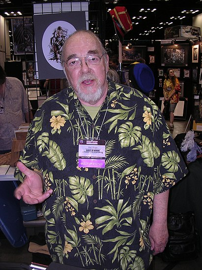

ГАЙГЭКС, ГЭРИ
"You can not have a meaningful campaign if strict time records are not kept."
 Эрнест Гэри Гайгэкс (англ. Ernest Gary Gygax; 27 июля 1938 — 4 марта 2008) — американский писатель и разработчик настольных игр, наиболее известный как один из авторов ролевой игры Dungeons & Dragons, которую он создал в 1974 году совместно с Дэйвом Арнесоном. Гайгэкса называют отцом ролевых игр.
В 1960-х Гайгэкс серьёзно увлекался варгеймами и организовал первый игровой конвент Gen Con. В 1971 году он вместе с Джеффом Перреном создал Chainmail, настольный варгейм с использованием миниатюр на средневековую тематику. Вместе с другом детства Доном Кэем в 1973 году Гайгэкс основал компанию Tactical Studies Rules (TSR, Inc.). В следующем году он вместе с Дэйвом Арнесоном создал настольную ролевую игру Dungeons & Dragons (D&D), которая строилась на основе Chainmail с дополнением элементов фэнтези, которое Гэри любил в детстве. В том же году он основал журнал Dragon, созданный для поддержки D&D. В 1977 году Гайгэкс продолжил работу над своей игрой, выпустив улучшенную версию под названием Advanced Dungeons & Dragons. Также он является автором большого количества игровых руководств и нескольких приключений. Гайгэкс создал сеттинг Грейхок, по которому написал несколько игровых приложений и приключенческих романов.
В 1985 году из-за конфликта с новым владельцем TSR Гайгэкс покинул созданную им компанию и продолжил заниматься разработкой ролевых игр независимо. Он участвовал в разработке ролевых игр Dangerous Journeys (1992), Lejendary Adventure (1999) и Castles & Crusades (2005), которым, однако, было очень далеко до успеха его главного детища. До конца своих дней он продолжал заниматься творчеством: писал игровые руководства, романы и рассказы в жанре фэнтези и активно участвовал в жизни сообщества любителей ролевых игр.
Гайгэкс был женат дважды и имел шесть детей. В 2004 году он пережил два инсульта, позже врачи диагностировали у него аневризму брюшной аорты, от которой Гайгэкс скончался в марте 2008 года.
РАННИЕ ГОДЫ
Гэри Гайгэкс родился в Чикаго в семье швейцарского иммигранта и скрипача Чикагского симфонического оркестра Эрнста Гайгэкса. Детство он провёл в Чикаго, серьёзно конфликтовал с детьми из соседнего квартала, участвовал в массовых драках, из-за чего в 1946 году семья переехала в город Лейк-Дженива, штат Висконсин, где семья матери Гэри жила с начала XIX века.
В детстве и юности Гайгэкс увлекался литературой в жанрах фэнтези и научная фантастика, а также любил разнообразные игры. В пять лет он играл в карточные игры, позже в шахматы, а в десять лет играл с друзьями в некое подобие ролевых игр живого действия, в которых он исполнял роль ведущего. К научной фантастике и фэнтези Гэри пристрастил его отец. В 1953 году Гайгэкс стал совмещать любовь к играм и увлечённость историей в настольных варгеймах, в которые он играл со своим лучшим другом Доном Кэем. Подростками Гайгэкс и Кэй создали собственные правила для игры с миниатюрными солдатиками, взрывы имитировали при помощи петард.
Гайгэкс бросил школу в 11 классе и стал работать, попробовав себя в различных специальностях, пока в 19 лет не вернулся в Чикаго. Он учился на вечерних занятиях в профессиональном колледже и посещал курсы антропологии в Чикагском университете. В 1958 году Гэри женился на Мэри Джо Пауэлл, вскоре у них родились дети. Гайгэкс продолжал учиться на вечерних курсах, имел высокие оценки и по настоянию преподавателей подал заявку на поступление в Чикагский университет и был принят. Однако, будучи теперь уже женатым человеком, предпочёл вместо учёбы устроиться на работу в страховую компанию.
В декабре 1958 года Гайгэкса увлекла настольная игра Gettysburg от компании Avalon Hill. Он стал активным членом сообщества поклонников настольных игр и по почте играл в Diplomacy, для которой разрабатывал собственные варианты правил. К 1965 году Гайгэкс был очень серьёзно увлечён настольными варгеймами, писал статьи для многих тематических журналов, разрабатывал собственные правила, в частности пытался внести изменения в процесс получения случайных чисел, для чего использовал не только стандартную шестигранную кость, но и кости в виде четырёх других правильных многогранников.
ВАРГЕЙМЫ
В 1966 году Гайгэкс вместе с Биллом Спиром и Скоттом Данканом основал Международную федерацию любителей варгеймов (International Federation of Wargamers или IFW), которая объединила несколько существующих клубов варгеймов, продвигала интересы поклонников и организовывала для них форумы. В 1967 году Гайгэкс провёл собрание 20 любителей варгеймов в подвале своего дома в Лейк-Женева, куда он с семьёй вернулся в том же году. Это собрание получило название Gen Con 0. В следующем году Гайгэкс арендовал за 50 долларов зал для проведения форума, ставшего официально первым конвентом в Лейк-Женеве (сокращённо Gen Con). В настоящее время Gen Con — это один из крупнейших игровых конвентов в Северной Америке. В августе 1969 года, на втором Gen Con’е, Гайгэкс познакомился с Дэйвом Арнесоном, будущим соавтором Dungeons & Dragons.
Совместно с Доном Кэем, Майком Ризом и Леоном Такером Гайгэкс в 1965 году основал клуб любителей военных миниатюр Lake Geneva Tactical Studies Association (LGTSA), штаб-квартира которого располагалась в подвале его дома. Серьёзно занявшись разработкой игр, Гэри бросил работу в страховом бизнесе и стал заниматься ремонтом обуви, что давало ему больше свободного времени для любимого дела. В 1970 году он стал главным редактором в компании Guidon Games, занимавшейся выпуском варгеймов. Гайгэкс участвовал в создании настольных исторических игр Alexander the Great (о походах Александра Македонского) и Dunkirk (о Дюнкеркской операции), выпущенных в 1971 году. В 1968 году Гайгэкс вместе с Джеффом Перреном написал правила для варгейма Chainmail (Кольчуга), посвящённого тактическим битвам Средневековья; игра также была выпущена в 1971 году. Совместно с Дэйвом Арнесоном он создал варгейм на военно-морскую тематику под названием Don’t Give Up the Ship!
Ко второму изданию Chainmail, выпущенному в 1972 году, Гайгэкс добавил приложение к правилам, вводившее в игру монстров и представителей нечеловеческих рас, основанных на работах Толкина и других писателей в жанре фэнтези. Были созданы правила для игры отдельными персонажами, в том числе волшебниками; появились правила по использованию десяти заклинаний, влияющих на ход битвы. В том же году, во время визита в Лейк-Женеву, Арнесон провёл игру по новым правилам в собственном сеттинге Блэкмур, и Гайгэкс сразу увидел у ролевых игр большой потенциал.
Используя за основу адаптацию правил Chainmail под сеттинг Блэкмур, Гайгэкс и Арнесон взялись за разработку ролевой игры, названной поначалу The Fantasy Game (Игра в жанре фэнтези), которая впоследствии и стала Dungeons & Dragons. Правила для магии были созданы под влиянием работ писателя Джека Вэнса, в остальных аспектах системы авторы вдохновлялись произведениями Роберта Говарда, Лайона Спрэг де Кампа и Фрица Лейбера. В 1973 году Гайгэкс ушёл с работы обувщика и попытался издать свою игру через Avalon Hill, но представители компании ответили отказом.
TSR
Гайгэкс ушёл из Guidon Games в 1973 году и в октябре совместно с Доном Кэем основал издательскую компанию Tactical Studies Rules (позже известную как TSR, Inc.). Каждый из них вложил в компанию по тысяче долларов, однако этой суммы для издания правил Dungeons & Dragons оказалось недостаточно, поэтому из опасений, что другие издательства выпустят похожие проекты раньше них, Гайгэкс и Кей пригласили в 1974 году Брайана Блума в качестве третьего партнёра. Это позволило в январе того же года выпустить Dungeons & Dragons в виде коробочного набора. Первый тираж в 1000 копий разошёлся менее чем за год. В этот период Гайгэкс также продолжал работать над правилами для настольных варгеймов, таких как Cavaliers and Roundheads (о гражданской войне XVII века в Англии в период Английской буржуазной революции, совместно с Джеффом Перреном), Classic Warfare (об античности), Tractics (о Второй мировой войне, совместно с Майком Ризом и Леоном Такером) и Warriors of Mars.
В 1974 году Гайгэкс создал журнал The Strategic Review, который вскоре при участии Тима Каска, нанятого в качестве редактора, превратился в журнал The Dragon, посвящённый фэнтези и, в частности, Dungeons & Dragons. Для Dungeons & Dragons Гайгэкс создал расширяющие правила приложения Greyhawk, Eldritch Wizardry и Swords & Spells. Совместно с Брайаном Блумом он в 1975 году создал ролевую игру в тематике Дикого Запада под названием Boot Hill. В 1977 году увидел свет Dungeons & Dragons Basic Set, специальное издание D&D, ориентированное на молодёжную аудиторию.
В 1975 году Дон Кэй неожиданно скончался от сердечного приступа в возрасте 36 лет. Его доля компании перешла к его вдове, с которой у Гайгэкса отношения не сложились. Он писал, что ведение с ней бизнеса было невозможным. Поскольку ни у Гайгэкса, ни у Блума не было достаточно денег, чтобы выкупить долю вдовы Кэя, Брайан Блум предложил позволить его отцу Мелвину выкупить долю Кэя и стать третьим партнёром. Позже доля Мелвина Блума перешла к его второму сыну, Кевину, и компания TSR, Inc. на две трети стала принадлежать братьям Блум.
ADVANCED DUNGEONS & DRAGONS
В 1977 году была издана новая версия D&D, получившая название Advanced Dungeons & Dragons (AD&D), а вскоре последовал выпуск большого количества приложений для этой системы. Правила D&D и AD&D были несовместимы между собой, поэтому некоторое время продукция под этими марками выпускалась параллельно. Для этого издания Гайгэкс написал книги правил Players Handbook (руководство игрока), Dungeon Masters Guide (руководство для Мастера), Monster Manual I—II (справочник по монстрам), Unearthed Arcana (набор дополнительных возможностей для игрока и рекомендаций для Мастера) и Oriental Adventures (дополнение по играм в восточном стиле). Гайгэкс также написал несколько приключений для D&D и AD&D. Сеттинг Грейхок, который он придумывал в течение многих лет, увидел свет в 1980 году, а в 1983 году был выпущен в виде коробочного набора. Продажи Dungeons & Dragons в 1980 году достигли отметки в 8,5 млн долларов. Гайгэкс также поучаствовал в создании настольной ролевой игры Gamma World в жанре постапокалиптики.
В 1979 году студент Университета штат Мичиган Джеймс Даллас Эгберт III предположительно пропал в туннелях под университетом во время игры живого действия по мотивам D&D. Его поиски продолжались несколько недель, и, хотя в действительности Эгберт тайно покинул кампус, этот инцидент привлёк к Dungeons & Dragons внимание СМИ, выставивших игру не в лучшем свете. В 1982 году покончил с собой сын Патрисии Пуллинг, которая обвинила в его смерти D&D и создала организацию Bothered About Dungeons & Dragons (Обеспокоенные относительно D&D; B.A.D.D.), которая выступала против игры и её издателей. В 1985 году Гайгэкс выступил на национальном телевидении в защиту своего детища. В его адрес стали поступать угрозы физической расправой, после чего он вынужден был нанять телохранителя. Между тем, в 1982 году годовые продажи продуктов серии D&D достигли уровня в 16 млн долларов, а в январе 1983 года газета The New York Times предположила, что D&D станет величайшей игрой 1980-х, подобно «Монополии» времён Великой депрессии.
УХОД ИЗ TSR
В 1983 году TSR разделилась на TSR, Inc. и TSR Entertainment, Inc. Гайгэкс был президентом и председателем совета директоров TSR, Inc. и президентом TSR Entertainment, Inc. Он уехал в Голливуд, где два года занимался выпуском мультсериала по мотивам Dungeons & Dragons для канала CBS. На время отсутствия Гайгэкса TSR, Inc. руководили его партнёры, Кевин и Брайан Блумы. Вернувшись в Висконсин в 1984 году, Гайгэкс обнаружил, что компания столкнулась с серьёзными финансовыми трудностями, а её долг достиг 1,5 млн долларов. Гайгэкс нанял Лоррейн Уильямс для руководства компанией и добился отставки Кевина Блума с должности исполнительного директора, после чего братья Блум продали Уильямс свои доли в компании, несмотря на попытки Гайгэкса заблокировать сделку через суд. Вскоре стало очевидно, что у Гайгэкса и Уильямс совершенно разное видение будущего TSR, Inc., но большая доля компании уже находилась в руках Уильямс. В октябре 1985 года совет директоров снял Гайгэкса с должностей президента и председателя совета. 31 декабря 1985 года, потеряв контроль над собственной компанией, Гэри покинул TSR, Inc. Продажи продукции под маркой Dungeons & Dragons в 1985 году достигли 29 млн долларов.
Перед уходом из компании Гайгэкс издал два романа в жанре фэнтези, действие которых происходит в мире Грейхок, а главным героем является жулик по имени Горд. По договору с TSR, Inc. он сохранил за собой права на Горда и всех созданных им персонажей, чьи имена являются анаграммами его собственного имени (например, Йраг и Загиг). Однако компания получила все права на Dungeons & Dragons, мир Грейхок и всех персонажей Гайгэкса, появлявшихся в продуктах TSR, таких как Морденкайнен, Робилар и Тензер. В октябре 1986 года Гайгэкс покинул все должности в TSR, Inc., а в декабре окончательно оформил продажу своей доли компании.
ПОСЛЕ TSR
 Сразу после ухода из TSR Гайгэкс создал игровую компанию New Infinities Productions, Inc. В 1987 году Гайгэкс совместно с Кимом Моаном и Фрэнком Ментцером выпустил научно-фантастическую ролевую игру Cyborg Commando. Следующим его проектом стала ролевая игра в жанре фэнтези Dangerous Dimension (Опасные измерения), однако из-за угрозы иском со стороны TSR, Inc., отмечавшей схожесть аббревиатур DD и D&D, название пришлось поменять на Dangerous Journeys (DJ). Созданная Гайгэксом серия продуктов по этой игре была выпущена компанией Game Designers' Workshop. Руководство TSR тут же подало в суд за нарушение авторских прав, поскольку у DJ и D&D оказалось много общих черт. В итоге дело было улажено вне суда, TSR выкупила все права на DJ и полностью закрыла этот проект.
Сразу после ухода из TSR Гайгэкс создал игровую компанию New Infinities Productions, Inc. В 1987 году Гайгэкс совместно с Кимом Моаном и Фрэнком Ментцером выпустил научно-фантастическую ролевую игру Cyborg Commando. Следующим его проектом стала ролевая игра в жанре фэнтези Dangerous Dimension (Опасные измерения), однако из-за угрозы иском со стороны TSR, Inc., отмечавшей схожесть аббревиатур DD и D&D, название пришлось поменять на Dangerous Journeys (DJ). Созданная Гайгэксом серия продуктов по этой игре была выпущена компанией Game Designers' Workshop. Руководство TSR тут же подало в суд за нарушение авторских прав, поскольку у DJ и D&D оказалось много общих черт. В итоге дело было улажено вне суда, TSR выкупила все права на DJ и полностью закрыла этот проект.
В 1986—1988 годах Гайгэкс написал ещё несколько романов прежнего цикла о жулике Горде, которые были изданы New Infinities Productions. В 1988 году, выразив своё недовольство тем, как новые авторы TSR меняют его сеттинг Грейхок, Гайгэкс окончательно решил порвать с Грейхоком и уничтожил этот вымышленный мир в своём очередном романе. В 1990-х Гайгэкс написал ещё три романа, а также большое количество небольших рассказов для различных журналов. В 1995 году он начал работу над компьютерной игрой, которая в 1999 году переросла в настольную ролевую игру, Lejendary Adventure. После выхода в свет системы d20 (основа третьей редакции Dungeons & Dragons) Гайгэкс создавал игровые приложения для этой системы. В 2002—2006 годах он создал три приключения для издателя Troll Lord Games.
В 2003 году Гайгэкс объявил, что занимается вместе с Робом Кунцем работой над подробным описанием замка и города Грейхок для игровой системы Castles & Crusades (модификация классической D&D), но из-за того, что права на это название перешли компании Wizards of the Coast, которая поглотила TSR в 1997 году, он поменял название замка на Загиг, а города на Йггсбург. В апреле 2004 года, во время работы над этим масштабным проектом, у Гайгэкса случился инсульт. Он смог вернуться к работе за компьютером через семь месяцев, но уже проводил за работой час-два в день вместо прежних 14 часов. Кунц предпочёл заниматься другими своими проектами, но нашёл время для написания приключения для этого сеттинга. В 2005 году вышел первый 256-страничный том сеттинга Йггсбург, позже было издано и приключение Кунца. Второй том сеттинга увидел свет лишь в 2008 году, Гайгэкс планировал продолжать работу над сеттингом, но его смерть в марте 2008 года оставила эту работу незаконченной.
ЛИЧНАЯ ЖИЗНЬ
С ранних лет Гайгэкс увлекался охотой, хорошо стрелял как из лука, так и из ружья. Он собирал оружие, в различное время имел коллекцию винтовок, ружей и пистолетов.
В 1958 году Гайгэкс женился на Мэри Джо Пауэлл. К 1961 году у них родилось двое детей, которые впоследствии активно участвовали в первых играх по правилам Dungeons & Dragons. Всего в первом браке у Гайгэкса родилось пятеро детей: Эрнест, Люк, Хайди, Синди и Элиз. В начале 1980-х он развёлся, а 15 августа 1987 года повторно женился. Его избранницей стала Гэйл Карпентер, родившая Гэри шестого ребёнка. В 2005 году у него было семь внуков.
После инсультов, перенесённых 1 апреля и 4 мая 2004 года, и сердечного приступа, вызванного неправильным лечением, Гайгэкс практически прекратил писательскую деятельность. Будучи заядлым курильщиком, он вынужден был перейти с сигарет на сигары. В конце 2005 года у него диагностировали аневризму брюшной аорты. Хотя Гайгэкс серьёзно уменьшил рабочую нагрузку, он продолжил активно участвовать в жизни игрового сообщества, регулярно участвовал в дискуссиях на тематических форумах.
Гайгэкс ушёл из жизни 4 марта 2008 года в своём доме в Лейк-Женева в возрасте 69 лет.
ПРИЗНАНИЕ И ПАМЯТЬ
В 1980 году Гайгэкс был включён в зал славы Origins. Сайт GameSpy поделил между Гайгэксом и Дж. Р. Р. Толкином 18-е место в своём рейтинге 30 людей, оказавших наибольшее влияние на игровую индустрию. Разработчики многопользовательских ролевых игр World of Warcraft, Ultima Online и Dungeons & Dragons Online, а также авторы мультфильма «Футурама: Игра Бендера» оставили посвящения Гэри Гайгэксу. Сатирик Стивен Кольбер, в молодости увлекавшийся D&D, посвятил Гайгэксу часть своей программы The Colbert Report. Памяти Гайгэкса посвящены все три основных игровых руководства по 4-й редакции Dungeons & Dragons, вышедшей в 2008 году.
СПИСОК ХУДОЖЕСТВЕННЫХ ПРОИЗВЕДЕНИЙ
Цикл Greyhawk Adventures
- Gary Gygax. Saga of Old City. — TSR, 1985. — 352 с.
- Gary Gygax. Artifact of Evil. — TSR, 1986. — 352 с.
Цикл Gord the Rogue
- Gary Gygax. Sea of Death. — Ace/New Infinities, 1987. — 394 с.
- Gary Gygax. Night Arrant. — Ace/New Infinities, 1987. — 398 с.
- Gary Gygax. City of Hawks. — Ace/New Infinities, 1987. — 400 с.
- Gary Gygax. Come Endless Darkness. — New Infinities, 1988. — 379 с.
- Gary Gygax. Dance of Demons. — New Infinities, 1988. — 428 с.
Цикл Mythos
- Gary Gygax. The Anubis Murders. — Roc/NAL/Penguin, 1992. — 299 с.
- Gary Gygax. The Samarkand Solution. — Roc/Penguin, 1993. — 284 с.
- Gary Gygax. Death in Delhi. — Roc/Penguin, 1993. — 287 с.
- Gary Gygax. Infernal Sorceress. — Paizo Publishing, LLC, 2008. — 258 с.